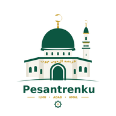

Pesantrenku
Sistem Manajemen Pesantren Modern
Pilih Musyrifah
👑 Login sebagai Admin
🚪 Keluar / Ganti Pesantren
Made with
♥️
by
Fatum Studio
🕌
Pilih Pesantren / Asrama
Pilih yang sudah terdaftar, atau daftarkan yang baru
⏳ Memuat daftar...
+ Daftar Pesantren/Asrama Baru
🕌
Selamat Datang!
Aplikasi Manajemen Pesantren
by Fatum Studio
Setup Awal
Data tersimpan di cloud terpisah untuk setiap asrama/pondok.
Tipe Lembaga
🏠 Asrama
🕌 Pondok Pesantren
Nama Asrama *
PIN Pesantren (4 digit) *
PIN ini akan ditanyakan setiap kali memilih pesantren ini di halaman awal aplikasi. Beritahu PIN ini hanya ke pengurus yang berwenang.
Mulai Pakai Aplikasi →
← Kembali ke Pilih Pesantren
Nama dapat diubah kapan saja di Pengaturan.
Masukkan PIN
4 digit angka
1
2
3
4
5
6
7
8
9
Batal
0
⌫
←
Dashboard
☀
↻
💬
⌕
☰
-
←
Chat & Notifikasi
Memuat...
➤
⌂
Beranda
◈
Kegiatan
◑
Santri
◉
Rekap
◎
Pelanggaran
▤
Perizinan